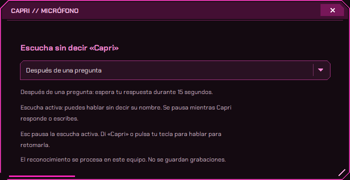

10
ESCUCHA DESPUÉS DE UNA PREGUNTA
ELLA PREGUNTA.
TÚ CONTINÚAS.
Responde sin repetir «Capri»
cada vez que ella te pregunta algo.
CONVERSACIÓN DE EJEMPLO
CAPRI /¿Ponemos algo de música?
TÚ /Mi playlist Para jugar.

Es opcional. Tú eliges cómo quieres hablar con ella.
15 segundos para responder después de que termine su voz